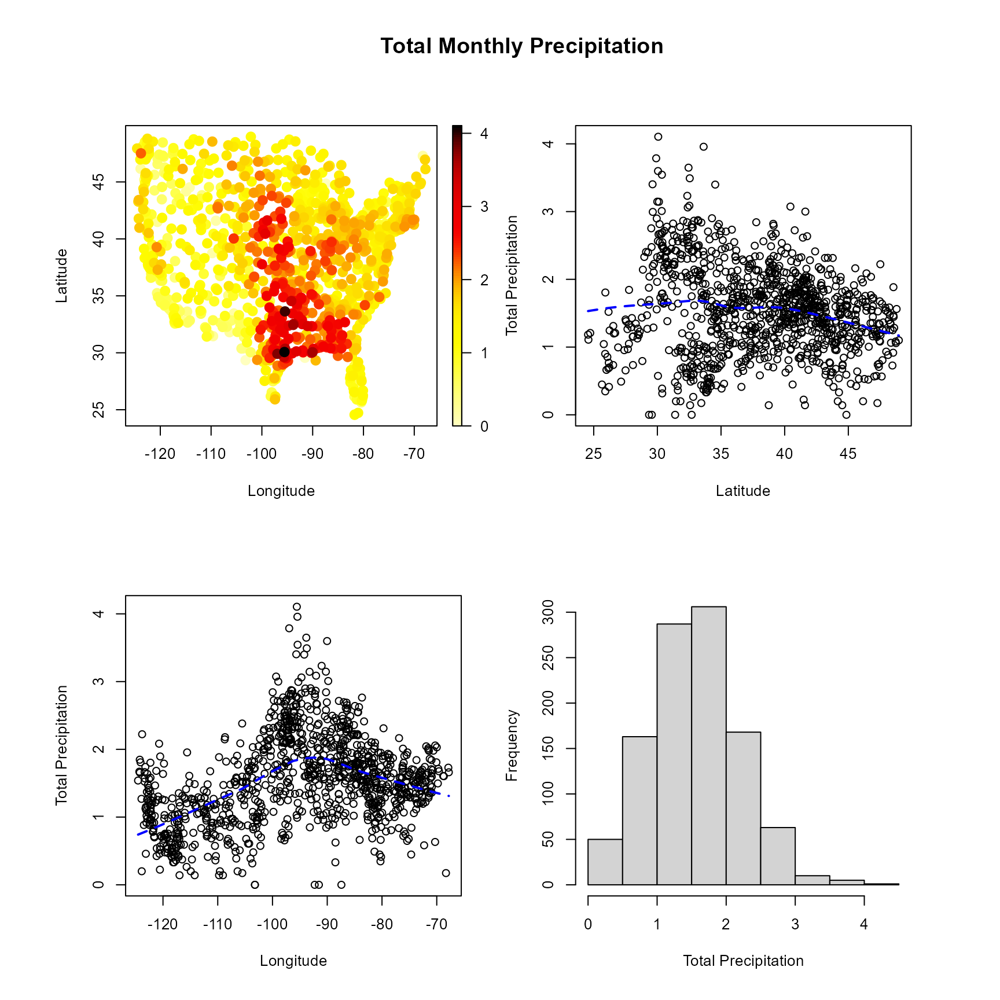
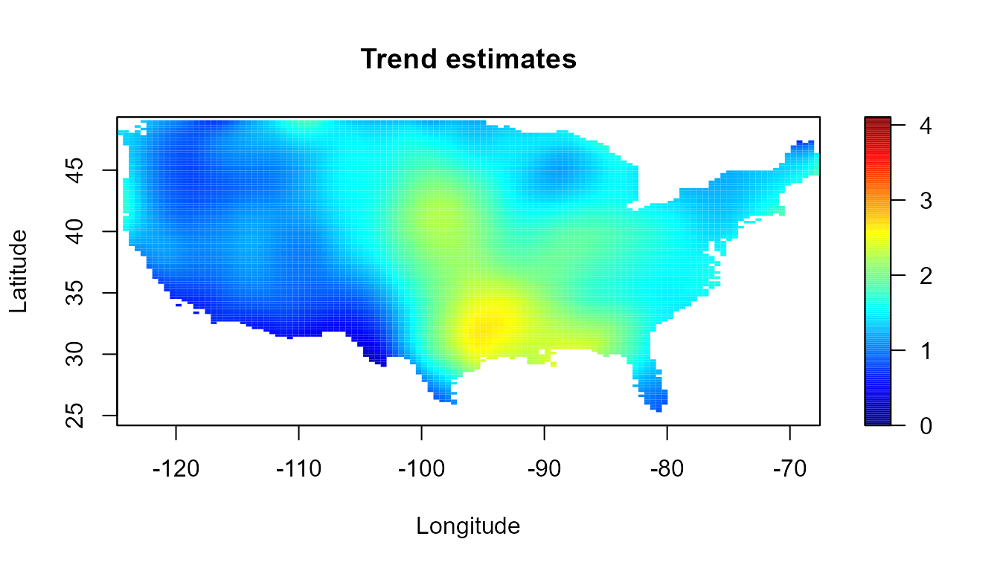
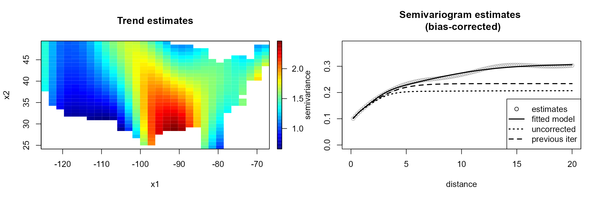
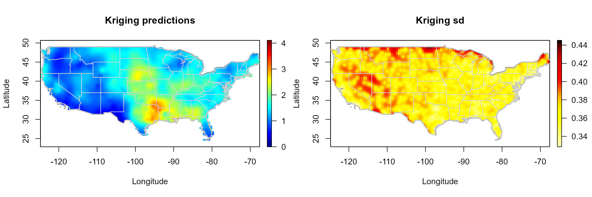

Introduction to the npsp Package
Ruben Fernandez-Casal (ruben.fcasal@udc.es)
npsp 0.7.10
Source:../../../../E:/OneDrive - Universidade da Coruña/__R_Machinery/__npsp/npsp/vignettes/npsp.Rmd
npsp.RmdThis vignette (a working draft) tries to illustrate the use of the
npsp (Nonparametric spatial statistics) package. This
package implements nonparametric methods for inference on
multidimensional geostatistical processes, avoiding the misspecification
problems that may arise when using parametric models. The spatial
process can be either stationary or show a non-constant trend. Joint
estimation of the trend and the semivariogram can be performed
automatically, by using the function np.fitgeo(), or by a
step-by-step approach.
Introduction
We will assume that \(\left\{ Y(\mathbf{x}),\mathbf{x}\in D \subset \mathbb{R}^{d}\right\}\) is a spatial process that can be modeled as: \[Y(\mathbf{x})=\mu(\mathbf{x})+\varepsilon(\mathbf{x}),\]
where \(\mu(\cdot)\) is the trend function (large-scale variation) and the error term \(\varepsilon\) (small-scale variation), is a second order stationary process with zero mean and covariogram \(C(\mathbf{u}) = Cov(\varepsilon \left( \mathbf{x}\right) ,\varepsilon \left(\mathbf{x}+\mathbf{u}\right) )\), with \(\mathbf{u} \in D\).
In this framework, given \(n\) observed values \(\mathbf{Y}=( Y(\mathbf{x}_{1}),...,Y(\mathbf{x}_{n}))^{t}\), the first step consists in estimate the trend \(\mu(\mathbf{x})\) and the semivariogram \(\gamma(\mathbf{h}) = C(\mathbf{0}) - C(\mathbf{u})\).
There are several R packages, such as gstat or geoR, which
implement the traditional geostatistical techniques to approximate these
functions. Nevertheless, as these approaches usually assume parametric
models, they can present misspecification problems.
The aim of the npsp package is to provide nonparametric
tools for geostatistical modeling and interpolation, under the general
spatial model (large + small variation scales), and without assuming any
specific form (parametric model) for the trend and the variogram of the
process.
## Package npsp: Nonparametric Spatial Statistics,
## version 0.7-10 (built on 2023-04-20).
## Copyright (C) R. Fernandez-Casal 2012-2023.
## Type `help(npsp)` for an overview of the package or
## visit https://rubenfcasal.github.io/npsp.The precipitation data set
(sp::SpatialGridDataFrame class object), supplied with the
npsp package, will be used in the examples in this work.
The data consist of total precipitations (square-root of rainfall
inches) during March 2016 recorded over 1053 locations on the
continental part of USA.
## Object of class SpatialPointsDataFrame
## Coordinates:
## min max
## x1 -124.555 -67.7928
## x2 24.555 48.9676
## Is projected: FALSE
## proj4string : [+proj=longlat +ellps=WGS84]
## Number of points: 1053
## Data attributes:
## y WBAN state
## Min. :0.000 Min. : 166 USA :1053
## 1st Qu.:1.100 1st Qu.:13733 Alaska : 0
## Median :1.539 Median :23254 Isla Hawai : 0
## Mean :1.551 Mean :39700 Isla Honolulu: 0
## 3rd Qu.:1.954 3rd Qu.:63895 Isla Kauai : 0
## Max. :4.105 Max. :94996 Isla Maui : 0
## (Other) : 0For instance, spoints() function may be used to plot the
data…
spoints(precipitation)
Function scattersplot() may be used to detect the
presence of a non-constant trend…
scattersplot(precipitation)
Trend estimation
The local polynomial trend estimator \(\hat{\mu}_{\mathbf{H}}(\mathbf{x})\) (e.g. Fan and Gijbels, 1996), obtained by polynomial smoothing of \(\{(\mathbf{x}_{i},Y(\mathbf{x}_{i})):i=1,\ldots,n\}\), is the solution for \(\beta_0\) to the least squares minimization problem \[\begin{aligned} \min_{\beta_0 ,\boldsymbol{\beta}_1, \ldots, \boldsymbol{\beta}_p} \sum_{i=1}^{n}\left\{ Y(\mathbf{x}_{i})-\beta_0 -\boldsymbol{\beta}_1^{t}(\mathbf{x}_{i}-\mathbf{x}) - \ldots \right. \nonumber \\ \left. -\boldsymbol{\beta}_p^{t}(\mathbf{x}_{i}-\mathbf{x})^p \right\}^{2} K_{\mathbf{H}}(\mathbf{x}_{i}-\mathbf{x}), \end{aligned}\] where \(\mathbf{H}\) is a \(d\times d\) symmetric positive definite matrix; \(K\) is a \(d\)-dimensional kernel and \(K_{\mathbf{H}}(\mathbf{u})=\left\vert \mathbf{H}\right\vert ^{-1}K(\mathbf{H}^{-1}\mathbf{u})\).
The bandwidth matrix \(\mathbf{H}\) controls the shape and size of the local neighborhood used to estimate \(\mu(\mathbf{x})\).
The local trend estimates can be computed in practice with the
locpol() function. A full bandwidth matrix and a
multiplicative triweight kernel is used to compute the weights. Main
calculations are performed in Fortran using the LAPACK library.
x <- coordinates(precipitation)
y <- precipitation$y
lp <- locpol(x, y, nbin = c(120, 120), h = diag(c(5, 5)))We can plot the trend estimates with function simage()
(or spersp()). Additionally, in this case the estimates
outside of continental part of USA will be masked.
attr <- attributes(precipitation)
border <- attr$border
# Mask grid points outside of continental part of USA
lp <- mask(lp, window = border)## Warning in mask.locpol.bin(lp, window = border):
## some data will be masked...
interior <- attr$interior
slim <- range(y)
col <- jet.colors(256)
simage(lp, slim = slim, main = "Trend estimates",
col = col, xlab = "Longitude", ylab = "Latitude", asp = 1)
plot(border, border = "darkgray", lwd = 2, add = TRUE)
plot(interior, border = "lightgray", lwd = 1, add = TRUE)
The smoothing procedures in npsp use linear binning to
discretize the data. For instance, instead of the previous code we can
use:
bin <- binning(x, y, nbin = c(120, 120), window = border)
# lp <- locpol(bin, h = diag(c(5, 5)))
lp2 <- locpol(bin, h = diag(c(2, 2)))
simage(lp2, slim = slim, main = "Trend estimates",
col = col, xlab = "Longitude", ylab = "Latitude", asp = 1)
plot(border, border = "darkgray", lwd = 2, add = TRUE)
plot(interior, border = "lightgray", lwd = 1, add = TRUE)
Usually two grids will be considered, a low resolution one to speed up computations during the modeling (e.g. by using the default values), and a higher resolution one to obtaing the final results.
Bandwidth selection
The trend estimates depends crucially on the bandwidth matrix \(H\). A small bandwith will produce undersmoothed estimates, whereas a big bandwith will oversmooth the data. Although it may be subjectively choosed by eye, it could be very beneficial to have automatic selection criteria from the data.
Traditional bandwidth selectors, such as cross validation (CV) or generalized cross validation (GCV), do not have a good performance for dependent data (Opsomer et al, 2001), since they tend to undersmooth the trend function.
The modified cross-validation criteria (MCV), proposed in (Chu and Marron, 1991) for time series, can be adapted for spatial data, by ignoring observations in a neighbourhood \(N(i)\) around \(\mathbf{x}_{i}\). Note that the ordinary CV approach is a particular case with \(N(i)=\left\lbrace \mathbf{x}_{i} \right\rbrace\).
In practice, the bandwidth can be selected through the
h.cv() (or hcv.data()) function.
bin <- binning(x, y, window = border)
lp0.h <- h.cv(bin)$h
lp0 <- locpol(bin, h = lp0.h, hat.bin = TRUE) An alternative is the corrected generalized cross-validation
criterion (CGCV), proposed in Francisco-Fernández and Opsomer (2005),
that takes the spatial dependence into account. To use this approach in
practice (by setting objective = "GCV" and
cov.bin in h.cv), an estimate of the variogram
is previously required.
Variogram estimation
When the process is assumed stationary, the pilot local linear estimate \(\hat\gamma(\mathbf{u})\) is obtained by the linear smoothing of \(\left(\mathbf{x}_{i}-\mathbf{x}_{j},(Y(\mathbf{x}_i)- Y(\mathbf{x}_j))^2/2 \right)\). The corresponding bandwidth can be selected, for instance, by minimizing the cross-validation relative squared error.
In the general setting with a non constant trend, the natural approach consists in removing the trend and estimating the variogram from the residuals \(\mathbf{r}=\mathbf{Y}-\mathbf{SY}\). Nevertheless, the residuals variability may be very different to that of the true errors (see e.g. Cressie, 1993, Section 3.4.3, for the case of the linear trend estimator). As the bias due to the direct use of residuals in variogram estimation may have a significant impact on inference, a similar approach to that described in Fernández-Casal and Francisco-Fernández (2014) could be considered.
In practice, the local linear variogram estimates can be computed
with functions np.svar() and
np.svariso.corr(). The generic function h.cv()
may be used to select the corresponding bandwidth.
svar.bin <- svariso(x, residuals(lp0), nlags = 60, maxlag = 20)
svar.h <- h.cv(svar.bin)$h
svar.np <- np.svar(svar.bin, h = svar.h)
svar.np2 <- np.svariso.corr(lp0, nlags = 60, maxlag = 20,
h = svar.h, plot = FALSE) The final variogram estimate is obtained by fitting a “nonparametric”
isotropic Shapiro-Botha variogram model (Shapiro and Botha, 1991), to
the nonparametric pilot estimate, by using the function
fitsvar.sb.iso().
svm0 <- fitsvar.sb.iso(svar.np, dk = 0)
svm1 <- fitsvar.sb.iso(svar.np2, dk = 0)
# plot...
plot(svm1, main = "Nonparametric bias-corrected semivariogram\nand fitted models",
legend = FALSE, xlim = c(0,max(coords(svar.np2))),
ylim = c(0,max(svar.np2$biny, na.rm = TRUE)))
plot(svm0, lwd = c(1, 1), add = TRUE)
plot(svar.np, type = "p", pch = 2, add = TRUE)
# abline(h = c(svm1$nugget, svm1$sill), lty = 3)
# abline(v = 0, lty = 3)
legend("bottomright", legend = c("corrected", 'biased'),
lty = c(1, 1), pch = c(1, 2), lwd = c(1, 1))
Automatic modeling
Function np.fitgeo() implements an automatic procedure
for the joint estimation of the trend and the semivariogram. The
algorithm is as follows:
Select an initial bandwidth to estimate the trend using the MCV criterion (function
h.cv()).Compute the local linear trend estimate (function
locpol()).Obtain a bias-corrected pilot semivariogram estimate from the corresponding residuals (function
np.svariso.corr()).Fit a valid Shapiro-Botha model to the pilot semivariogram estimates (function
fitsvar.sb.iso()).Select a new bandwidth matrix for trend estimation with the CGCV criterion, using the fitted variogram model to approximate the data covariance matrix (function
h.cv()withobjective = "GCV"andcov.bin =fitted variogram model).Repeat steps 2-5 until convergence (in practice, only two iterations are usually needed).
geomod <- np.fitgeo(x, y, nbin = c(30, 30), maxlag = 20, svm.resid = TRUE, window = border)
plot(geomod)
Setting corr.svar = TRUE may be very slow (and memory
demanding) when the number of data is large (note also that the bias in
the residual variogram decreases when the sample size increases).
Kriging
The final trend and variogram estimates could be employed for spatial
prediction, by using method np.kriging().
krig.grid <- np.kriging(geomod, ngrid = c(120, 120))
# Plot kriging predictions and kriging standard deviations
old.par <- par(mfrow = c(1,2), omd = c(0.0, 0.98, 0.0, 1))
krig.grid2 <- krig.grid
simage(krig.grid2, 'kpred', main = 'Kriging predictions', slim = slim,
xlab = "Longitude", ylab = "Latitude" , col = col, asp = 1, reset = FALSE)
plot(border, border = "darkgray", lwd = 2, add = TRUE)
plot(interior, border = "lightgray", lwd = 1, add = TRUE)
simage(krig.grid2, 'ksd', main = 'Kriging sd', xlab = "Longitude",
ylab = "Latitude" , col = hot.colors(256), asp = 1, reset = FALSE)
plot(border, border = "darkgray", lwd = 2, add = TRUE)
plot(interior, border = "lightgray", lwd = 1, add = TRUE)
par(old.par)Currently, only global residual kriging is implemented. Users are
encouraged to use gstat::krige() (or
krige.cv()) together with as.vgm() for local
kriging (see e.g. https://rubenfcasal.github.io/npsp/articles/krigstat.html).
Conclusions and future work
Unlike traditional geostatistical methods, the nonparametric procedures avoid problems due to model misspecification.
The bias due to the direct use of residuals, may have a significant impact on variogram estimation (and consequently on the selected bandwidth with the CGCV criterion). Therefore, the use of the bias-corrected nonparametric variogram estimator would be recommended.
Currently, only isotropic semivariogram estimation is supported, but the intention is to extend this approach to anisotropy in two components (Fernández-Casal et al., 2003), which could be suitable for modeling spatio-temporal dependency.
The nonparametric trend and variogram estimates also allow to perform inferences about other characteristics of interest of the process, for instance, by using the bootstrap algorithm described in (Castillo-Páez et al., 2019), which will be implemented in the next version of the package (https://github.com/rubenfcasal/npsp).
Acknowledgments
This research has been supported by MINECO grant MTM2017-82724-R, and by the Xunta de Galicia (Grupos de Referencia Competitiva ED431C-2020-14 and Centro de Investigación del Sistema universitario de Galicia ED431G 2019/01), all of them through the ERDF.
References
Castillo-Páez, S., Fernández-Casal, R., García-Soidán, P. (2019). A nonparametric bootstrap method for spatial data. Comput. Stat. Data An., 137, 1–15.
Chu, C. K. and Marron, J. S. (1991). Comparison of Two Bandwidth Selectors with Dependent Errors. The Annals of Statistics 19, 1906–1918.
Cressie, N. (1993). Statistics for Spatial Data. Wiley, New York.
Fernández-Casal, R. (2019). npsp: Nonparametric Spatial Statistics. R package version 0.7-5. https://github.com/rubenfcasal/npsp.
Fan, J. and Gijbels, I. (1996). Local polynomial modelling and its applications. Chapman & Hall, London.
Fernández-Casal, R. and Francisco-Fernández, M. (2014). Nonparametric bias-corrected variogram estimation under non-constant trend. Stochastic Environmental Research and Risk Assessment 28, 1247–1259.
Fernández-Casal, R., González Manteiga, W. and Febrero-Bande, M. (2003). Flexible Spatio-Temporal Stationary Variogram Models. Statistics and Computing 13, 127–136.
Francisco-Fernández, M. and Opsomer, J. D. (2005). Smoothing parameter selection methods for nonparametric regression with spatially correlated errors. The Canadian Journal of Statistics 33, 279–295.
Opsomer, J. D., Wang, Y. and Yang, Y. (2001). Nonparametric regression with correlated errors. Statistical Science 16, 134–153.
Shapiro, A. and Botha, J.D. (1991). Variogram fitting with a general class of conditionally non-negative definite functions. Computational Statistics and Data Analysis 11, 87–96.